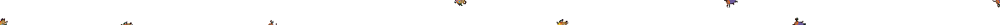

<顏色[#f60e8a]碰到 顏色[#d2944b]？> |
是否顏色一碰到顏色二 |
|---|
| 類別 | 偵測類 | 形狀 | 布林值 | 適用 | 角色 |

〈是否顏色一碰到顏色二〉積木是〔偵測類〕〖布林值〗積木。
有二個可嵌入顏色輸入類型之圓矩形參數框。前者是角色自身的顏色，後者是要碰觸的顏色。
用來檢查第一個輸入的顏色（以角色身上的顏色定義）是否正在觸碰另一個顏色。如果是，積木則回傳為真（true）。
- 使用此積木來作碰撞檢測，其精確度會比〈是否碰到指定顏色〉積木還要高。
- 在快速移動下、專案的顏色過於繁多、指定碰觸顏色的面積過小…等前提下，使用此積木也會常常無法判別。
- 某些點陣圖會有鋸齒邊緣，就會有半透明邊緣像素，可能在舞台上無法分辨出來，因此如果在選顏色時誤點，也會誤判。
- 角色隱藏，或使用「幻影」效果而消失不見時，此積木仍能作用。
